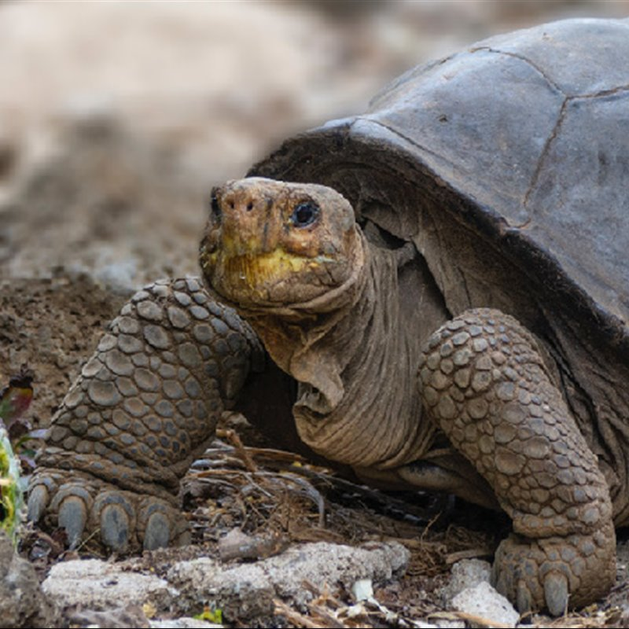

Tipos Populares de Mascotas
| Animal | Características | Imagen |
|---|---|---|
| Hamster | Pequeños y activos, los hamsters son fáciles de cuidar y no requieren mucho espacio. | |
| Conejo | Los conejos son cariñosos y disfrutan de la compañía humana. Necesitan espacio para moverse y juguetes para masticar. | |
| Tortuga | Las tortugas son tranquilas y pueden vivir muchos años. Requieren un hábitat adecuado con agua y tierra. |  |
| Pez Betta | Los peces Betta son conocidos por sus colores vibrantes y requieren un acuario pequeño y limpio. |  |